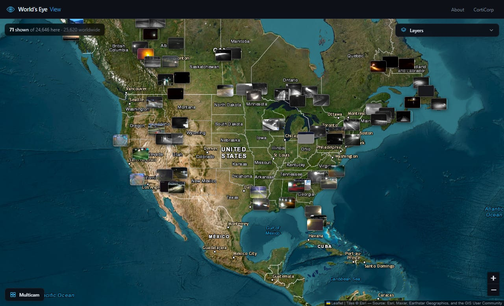
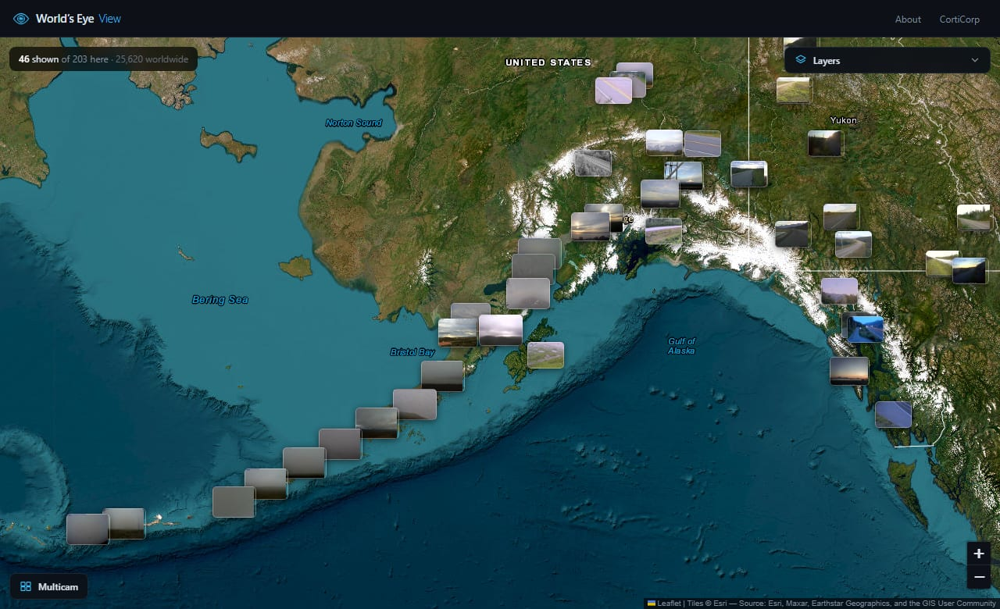
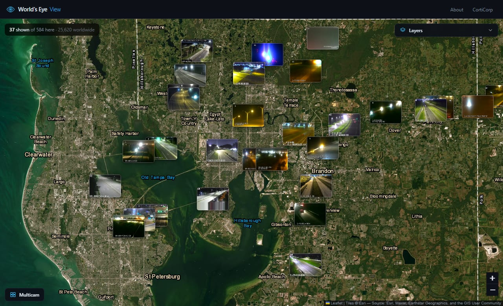
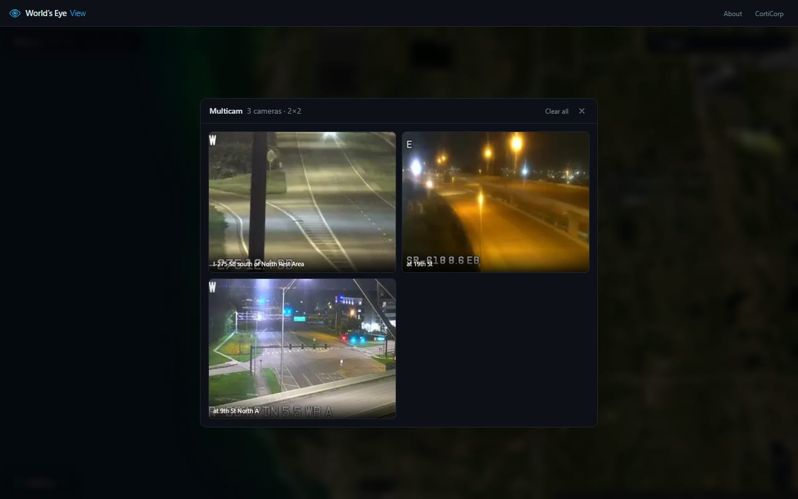
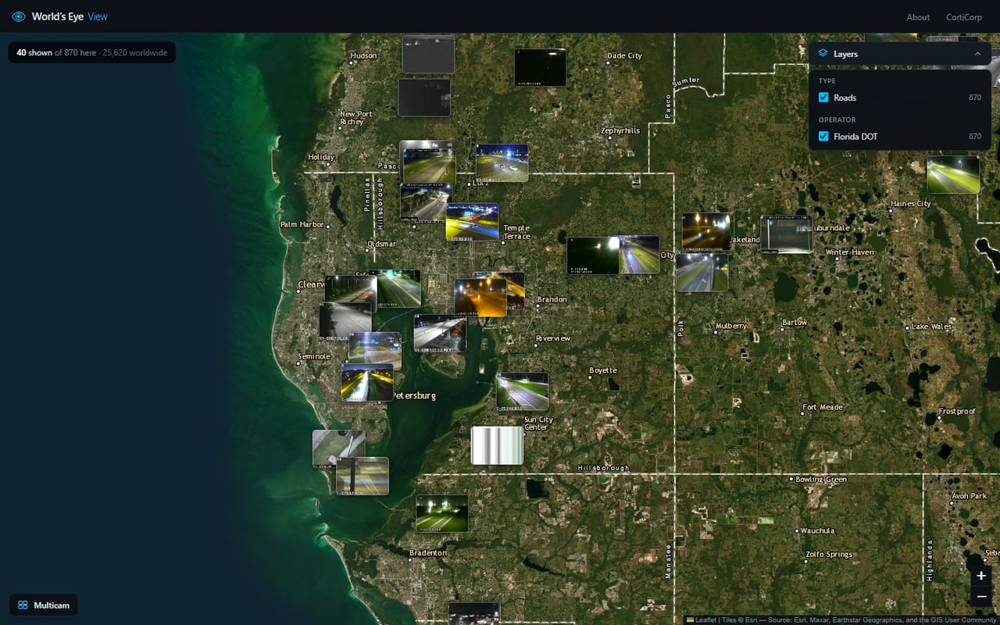

Live web app
Around 25,000 public webcams, stitched onto a single satellite map as live thumbnails. Zoom out and you see the notable ones — volcanoes, harbours, landmark city streets. Zoom in and a city fills with windows. Click any camera to watch it full size, or send several to a multicam wall and watch them together. Because every frame is real and refreshes on its own schedule, the map drifts through the day with the world: you can watch dawn cross a continent, or find a city already dark hours before its neighbour.



What it does
Every camera draws as its own live frame, sized in proportion to how notable it is and how far you’ve zoomed in. The map stays a map — cameras never carpet it.
Frames refresh on each camera’s own cadence, so the wall of thumbnails darkens and brightens with real daylight rather than sitting frozen.
Send any camera to a grid that arranges itself into a rectangle and resizes as you add or remove feeds. Your wall is remembered between visits.
Filter by what you’re looking at (volcanoes, harbours, roads) or by who runs it — so “only the Florida DOT cameras” is a single click.
Sources
Every camera is published openly by the agency that operates it. Nothing is scraped from a closed system, and no feed here requires a paid key.
| Source | Cameras | Coverage |
|---|---|---|
| 511 traveler information | ~21,000 | 14 US states and 8 Canadian provinces and territories — Florida and Georgia are the two largest single feeds |
| Caltrans CCTV | ~3,400 | California highways |
| Transport for London | ~780 | JamCams across Greater London |
| USGS Alaska Volcano Observatory | 64 | Active volcanoes and the communities downwind of them |
Closer look

Columns are the square root of the camera count, so the wall always aims at a rectangle rather than a long row. Past a certain size the tiles shrink instead of the panel growing off screen.

Counts are for everything in view, not just what fit on screen — so isolating a layer genuinely reveals cameras that lost their slot while everything else was switched on.
Under the hood
Twenty-five thousand cameras will not fit on a screen, so the server decides who gets a slot: it projects every candidate into screen pixels at your current zoom, drops them into thumbnail-sized grid cells, and keeps the most interesting camera in each. Zooming in shrinks the ground each cell covers, so the highway cameras that lost to a volcano at country scale reappear on their own once there’s room.
Frames are fetched and downscaled server-side — roughly 6KB each instead of 120KB, which is the difference between a map that loads and one that doesn’t. That also means every image arrives from a single origin, so the site’s content-security policy never has to trust the dozens of third-party hosts the cameras actually live on. Cameras that stop responding, or that answer with a “temporarily unavailable” placeholder card, are detected and dropped rather than left as dead tiles.
There is no database and no scheduled job. The whole catalogue is rebuilt in memory on boot and refreshed per source in the background.